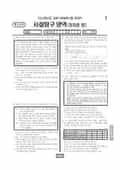

문제지

2022학년도 대학수학능력시험 · 2021년 11월 시행
2022학년도 수능 사회탐구 정치와법 1등급컷은 원점수 50점(추정), 표준점수 최고점은 63점입니다.
원점수 1등급컷은 공식 발표값이 아니라 EBSi·입시기관 값입니다. 등급별 값은 등급컷 표, 출처 구분은 데이터 원칙에 있습니다.

시험지를 먼저 풀어 보세요. 등급컷·표준점수·난이도는 흐리게 가려 뒀어요.
| 등급 | 원점수 | 표준점수 | 백분위 | 누적 |
|---|---|---|---|---|
| 1 | 50 | 63 | 97 | 6.91% |
| 2 | 48 | 62 | 90 | 13.79% |
| 3 | 45 | 60 | 78 | 26.48% |
| 4 | 40 | 56 | 61 | 40.75% |
| 5 | 27 | 47 | 41 | 60.14% |
| 6 | 15 | 39 | 21 | 82.31% |
| 7 | 11 | 36 | 11 | 90.07% |
| 8 | 6 | 33 | 3 | 97.67% |
등급별 컷 · 입시기관 3곳 원점수 추정 종합(EBSi·메가스터디·종로학원) · 만점 50점
정답 변경 없음
원문 표에서 이 과목 문항을 찾지 못했어요
시험 전체 관련 보도 2건은 2022학년도 대학수학능력시험 회차 페이지에 모아 두었어요.
한국교육과정평가원이 교육부 보도자료로 공개한 표준점수 도수분포로 계산했습니다.
EBSi 응답자 기준으로 가장 많이 틀린 문항은 20번(3점)이고, 오답률은 60.1%입니다. 오답률 50%를 넘은 문항은 2개입니다.
| 순위 | 문항 | 배점 | 오답률 | 정답 | 많이 고른 오답 |
|---|---|---|---|---|---|
| 1 | 20번 | 3점 | 60.1% | ① | ⑤ 28.4% |
| 2 | 16번 | 2점 | 59.5% | ③ | ④ 20.1% |
| 3 | 18번 | 2점 | 44.6% | ② | ③ 18.9% |
| 4 | 11번 | 2점 | 32.1% | ② | ⑤ 13.2% |
| 5 | 4번 | 2점 | 30.5% | ① | ⑤ 18.1% |
| 6 | 7번 | 2점 | 28.8% | ④ | ② 10.8% |
| 7 | 13번 | 3점 | 28.7% | ③ | ④ 12.5% |
| 8 | 6번 | 3점 | 28.4% | ② | ③ 9.1% |
| 9 | 15번 | 3점 | 28.3% | ④ | ① 10.3% |
| 10 | 14번 | 2점 | 26.4% | ⑤ | ② 11.4% |
| 11 | 17번 | 3점 | 26% | ④ | ⑤ 7.4% |
| 12 | 9번 | 3점 | 22.8% | ② | ⑤ 9.6% |
| 13 | 8번 | 3점 | 22.8% | ② | ④ 7.4% |
| 14 | 5번 | 3점 | 22.8% | ④ | ② 6.7% |
| 15 | 3번 | 3점 | 21.5% | ② | ① 6.7% |
EBSi 가채점 응답자 기준 · 전 문항 중 오답률 상위 15문항
출처: EBSi 역대 등급컷·오답률 공개 화면. 가채점에 참여한 EBSi 이용자 응답이라 전체 응시자 정답률과는 다를 수 있습니다.
발행 기관: 한국교육과정평가원(KICE). 파일 위치: 이 사이트가 보관한 사본. 저작권은 발행 기관에 있습니다. 원본과 다르거나 게시 중단이 필요하면 연락처로 알려 주세요. 등급컷 출처 구분은 데이터 원칙에서 설명합니다.
막대 색은 역대 대비 난이도 · 진한 막대가 이 시험 · 막대를 누르면 그 회차로 이동
| 회차 | 1등급컷 | 표점 최고 | 1등급 표점 | 난이도 |
|---|---|---|---|---|
| 수능2022학년도이 시험 | 50 | 63 | 63 | 매우 쉬움 |
| 9모2022학년도 | 47 | 69 | 66 | 보통 |
| 6모2022학년도 | 46 | 71 | 68 | 어려움 |
정치와 법은 표준점수 최고점이 63점으로 사회탐구에서 가장 낮았고, 오답률 50%를 넘은 문항이 2개뿐인 쉬운 시험이었습니다.
가장 많이 틀린 20번(3점, 60.1%)은 응답의 28.4%가 한 오답을 고른 마지막 문항이었고, 16번(2점, 59.5%)은 지역구 의원 6인과 비례 대표 의원 9인으로 구성된 갑국 의회의 선거 결과를 분석하는 문항이었습니다.
지진으로 매매 목적물이 멸실된 사례 등 민법 판단을 묻는 18번(44.6%)이 뒤를 이었습니다.
선거 제도 문항은 지역구와 비례 대표의 의석 배분 방식을 표로 만들어 계산하는 연습이 가장 효과적입니다. 이 회차 사회탐구는 사회·문화·윤리와 사상(68점)과 정치와 법(63점)의 표준점수 최고점 차이가 5점이었습니다. 시험 전체 흐름은 이 회차의 회차 해설에 정리했습니다.